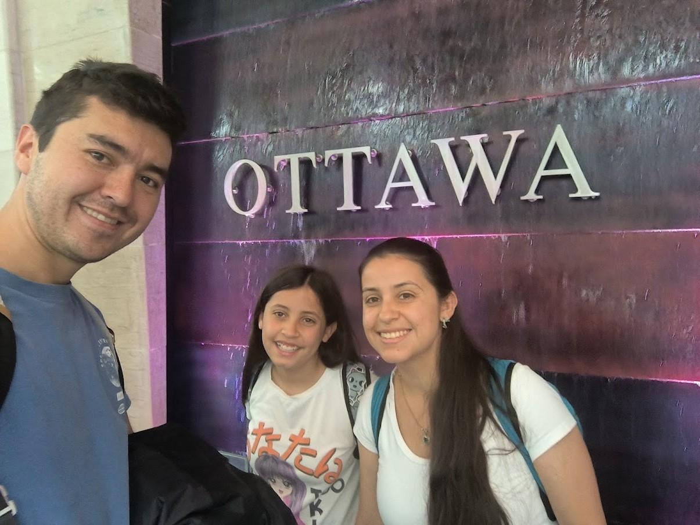
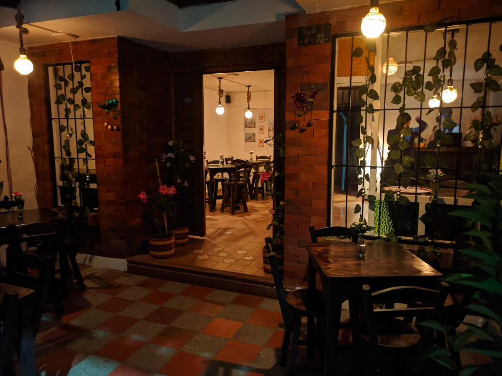
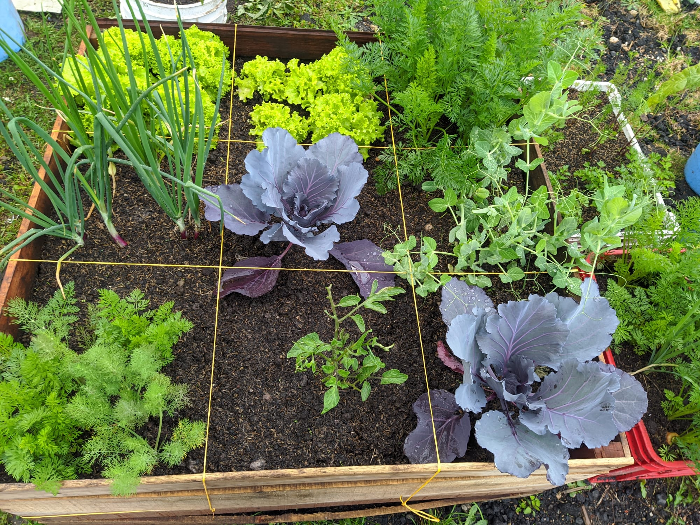
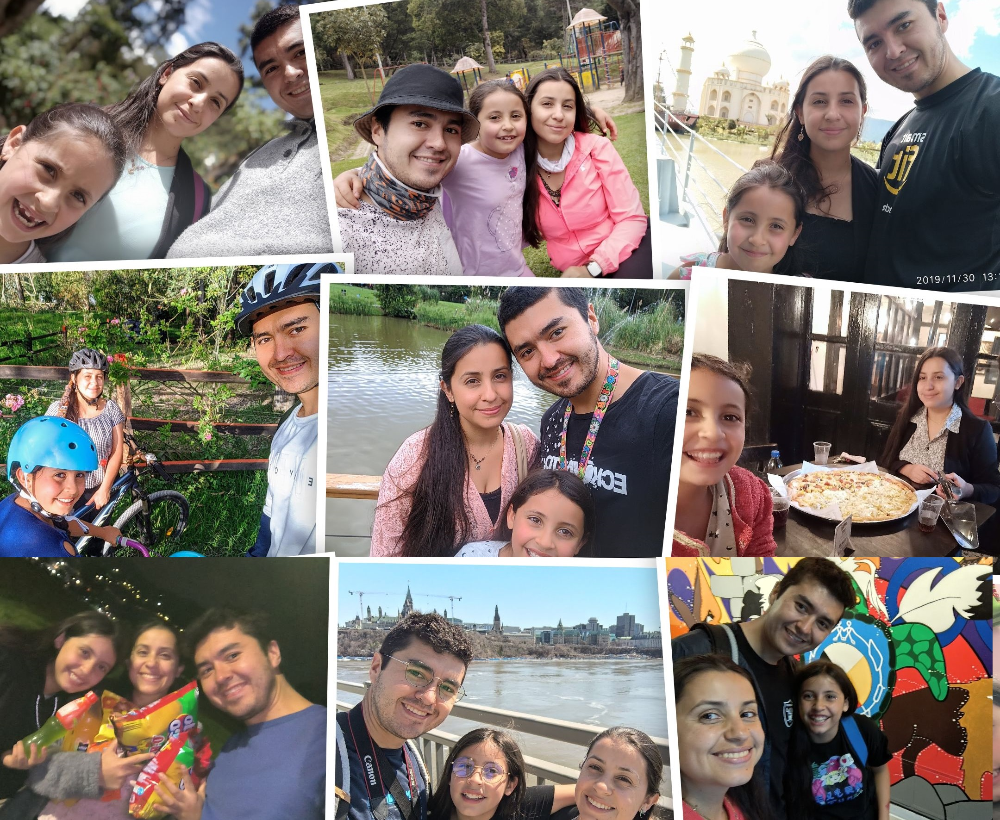

COMPUTER PROGRAMMING STUDENT
Date Completed: 04/2023
Skills Developed: Strategic Planning, Adaptability, Cultural Acclimation
This project chronicles our family's move to Canada as international students, highlighting the challenges and triumphs of settling in a new country. It includes navigating immigration policies, securing housing and education, and establishing a new community network.
Date Completed: 03/2021
Skills Developed: Entrepreneurship, Business Management, Customer Service
From concept to launch, this project outlines the journey of creating 'Destellos de Colibrí', a vibrant café bar. It illustrates the process of business planning, renovation, menu creation, and the ultimate opening of the establishment, all crafted with passion alongside my spouse.
Date Completed: 01/2021
Skills Developed: Sustainable Farming, DIY Construction, Environmental Stewardship
Starting with a barren plot at 2,600 meters above sea level, this project showcases the development of an urban farm using raised beds. It required learning about high-altitude crop cultivation, constructing the beds, and ultimately cultivating a variety of produce.
Date Completed: Ongoing
Skills Developed: Patience, Teaching, Time Management, Empathy, Communication, Problem-Solving
This ongoing project captures the adventures of raising my daughter, reflecting on the importance of patience, education, and love. It's a personal development journey, learning to balance life and work while nurturing her growth and celebrating each milestone.